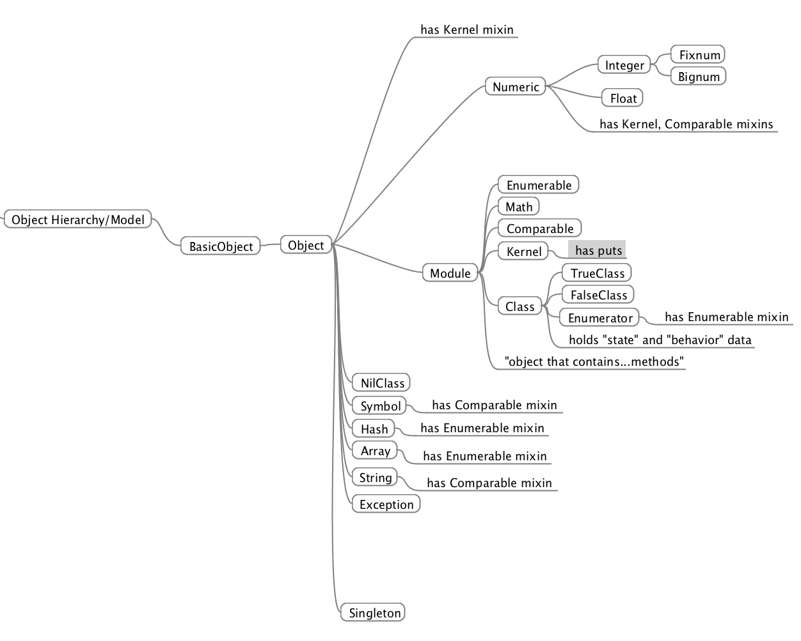

Ruby Classes are Modules, too
April 23rd 2015
Open up your irb and type Class.superclass
Yeah I was tripped out when I saw that too. Yes, as it so happens, a class is also a module. Both classes and modules are objects in Ruby. Take a look at the concept map I made, below. As you can see, everything in Ruby stems from an "object". An object is just a data structure that has both state and behavior. Let's save the details of how Ruby objects are implemented for another day.
Now for some definitions. A module is a 'container' that can hold variables, constants, classes, methods, and even other modules. A class is another type of container that holds only cariables, constants, and methods. The differences between a module and a class are best seen in how they are used. A module is used to conveniently define a namespace for a set of Ruby objects. A namespace is just a set of names for which each points to some value(s) in memory—i.e. where name binding is valid. Modules are like storage units that hold all the 'junk' no one wants to see. A class, on the other hand, a class is more like a rubber stamp: while it also defines a namespace, it has available a method, .new, that allows it to replicate itself.
A bit of quirk
Classes may not be able to contain modules, but classes can reference module contents. Using an include [module] statement, objects belonging to a module namespace are made local within the class context. If the module and the class reside in separate files, then the module must be required by the class file before the include [module] statment.